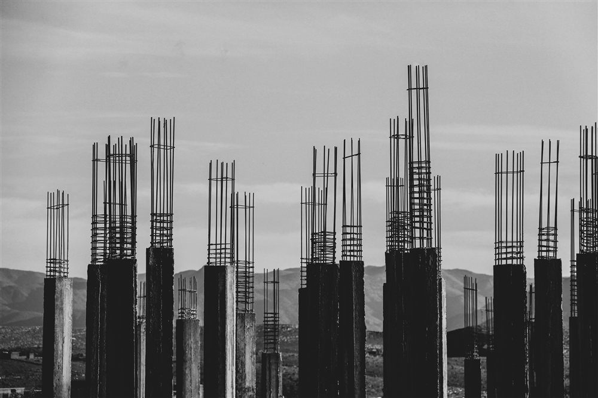
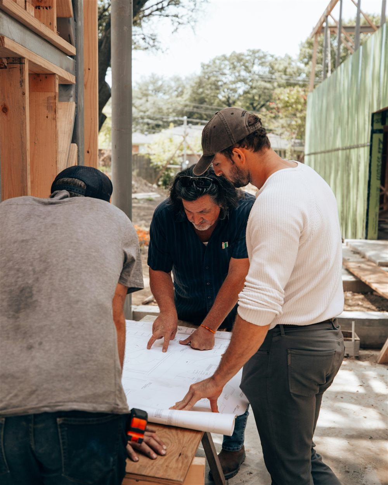

Qu'est-ce que la descente de charges ?
La descente de charges est le calcul qui consiste à additionner, niveau par niveau, tous les poids et efforts qu'une structure doit supporter, puis à les faire cheminer à travers les éléments porteurs jusqu'au sol. Elle part de la toiture ou de la terrasse la plus haute et progresse vers le bas : dalle, poutre, poteau ou voile, semelle, jusqu'à la fondation.
À chaque niveau, les charges reçues par un élément s'ajoutent à celles qu'il reprend déjà, avant d'être transmises à l'élément situé en dessous. C'est cette accumulation progressive, niveau après niveau, qui donne son nom au calcul. Elle est menée conformément à l'Eurocode 1 (NF EN 1991), qui fixe les valeurs des charges à considérer, puis exploitée pour le dimensionnement en béton armé selon l'Eurocode 2 (NF EN 1992).
Un calcul qui précède tous les autres. La descente de charges n'est pas une formalité administrative. Elle fixe l'effort que devra reprendre chaque poteau et chaque semelle. Sous-évaluer une charge à un niveau intermédiaire fausse le résultat de tous les niveaux inférieurs, jusqu'aux fondations.
Les charges à prendre en compte
La descente de charges distingue deux grandes familles d'actions, définies par l'Eurocode 1.
- Les charges permanentes (G) : le poids propre de la structure elle-même (dalles, poutres, poteaux) et celui des éléments fixes qu'elle supporte durablement (chapes, revêtements de sol, cloisons, étanchéité).
- Les charges d'exploitation ou variables (Q) : le poids des occupants, du mobilier, des équipements, ainsi que les charges climatiques (neige, vent) selon la zone du projet.
Ces valeurs varient selon la nature du local et l'usage du bâtiment. Le tableau ci-dessous présente les ordres de grandeur les plus fréquemment retenus.
| Élément ou usage | Type de charge | Valeur usuelle |
|---|---|---|
| Dalle béton armé pleine, 16 cm | Permanente (G) | 4,0 kN/m² |
| Revêtement de sol + chape | Permanente (G) | 0,8 à 1,2 kN/m² |
| Cloisons de distribution légères | Permanente (G) | 1,0 kN/m² |
| Logement d'habitation (catégorie A) | Exploitation (Q) | 1,5 kN/m² |
| Bureaux (catégorie B) | Exploitation (Q) | 2,5 kN/m² |
| Commerces (catégorie D) | Exploitation (Q) | 4,0 à 5,0 kN/m² |
| Escaliers d'habitation | Exploitation (Q) | 2,5 kN/m² |
| Toiture terrasse non accessible | Exploitation (Q) | 0,8 kN/m² |
Le cheminement des charges dans la structure
Une fois les charges surfaciques connues, l'ingénieur détermine la surface d'influence de chaque élément porteur, c'est-à-dire la portion de plancher dont il reprend le poids. Pour un poteau central, cette surface correspond généralement à la moitié des travées adjacentes dans chaque direction ; pour un poteau de rive, elle est plus restreinte.
Le calcul suit ensuite un ordre logique et descendant :
- La dalle reçoit les charges permanentes et d'exploitation du niveau et les transmet à ses appuis (poutres ou voiles porteurs).
- La poutre cumule les charges de dalle sur sa longueur et les concentre sur ses propres appuis : les poteaux ou les voiles.
- Le poteau reçoit les efforts de tous les niveaux situés au-dessus de lui, additionnés étage par étage, et les transmet à la fondation.
- La semelle reprend l'effort cumulé du poteau et le répartit sur le sol, selon la portance déterminée par l'étude géotechnique.
Dans un bâtiment à plusieurs niveaux, un poteau du rez-de-chaussée ne reprend donc pas seulement les charges de l'étage immédiatement supérieur : il cumule celles de tous les planchers qu'il porte, jusqu'à la toiture.

Combinaisons d'actions : ELU et ELS
Les charges G et Q ne s'additionnent pas simplement. L'Eurocode impose de les combiner avec des coefficients de pondération, selon l'état limite étudié :
- À l'état limite ultime (ELU), qui vérifie la résistance et la sécurité de la structure, la combinaison fondamentale la plus courante est 1,35 G + 1,5 Q. Ces coefficients majorent les charges pour couvrir les incertitudes de calcul et les aléas d'exécution.
- À l'état limite de service (ELS), qui vérifie le confort d'usage (flèches, fissuration, vibrations), la combinaison caractéristique retenue est G + Q, sans majoration.
C'est la combinaison ELU qui dimensionne en général les sections de béton et les quantités d'acier ; l'ELS vient ensuite vérifier que la déformation de l'ouvrage en service reste acceptable.
Pourquoi majorer les charges ? Les coefficients 1,35 et 1,5 ne sont pas arbitraires : ils traduisent statistiquement la marge de sécurité nécessaire face à la variabilité réelle des charges et aux imprécisions inévitables du calcul. C'est ce qui garantit qu'un ouvrage correctement dimensionné dispose d'une réserve de résistance.
Exemple de calcul : un poteau central de maison R+1
Rien ne vaut un cas concret. Prenons un poteau central d'une maison à un étage, qui reprend une portion de plancher de 4 m par 5 m, soit une surface d'influence de 20 m² à chaque niveau. Le poteau mesure 20 cm par 20 cm et 2,70 m de hauteur libre par niveau.
On commence par les charges surfaciques de chaque plancher :
| Niveau | Charges permanentes G | Charges d'exploitation Q |
|---|---|---|
| Toiture terrasse inaccessible | 6,5 kN/m² (dalle, forme de pente, isolation, étanchéité) | 1,0 kN/m² |
| Plancher d'étage (habitation) | 6,0 kN/m² (dalle, cloisons, revêtement) | 1,5 kN/m² |
On cumule ensuite du haut vers le bas, niveau après niveau :
- Toiture : G = 20 × 6,5 = 130 kN et Q = 20 × 1,0 = 20 kN
- Plancher d'étage : G = 20 × 6,0 = 120 kN et Q = 20 × 1,5 = 30 kN
- Poids propre du poteau : 0,20 × 0,20 × 2,70 × 25 kN/m³ = 2,7 kN par niveau, soit 5,4 kN pour deux niveaux
En pied de poteau, on obtient donc un cumul de G = 255 kN et Q = 50 kN. Il ne reste qu'à appliquer les combinaisons :
- À l'ELU : 1,35 × 255 + 1,5 × 50 = 419 kN. C'est cette valeur qui dimensionne la section de béton, les armatures du poteau et la semelle en dessous.
- À l'ELS : 255 + 50 = 305 kN. C'est elle qui sert à vérifier les contraintes transmises au sol par la fondation.
Une nuance sur les bâtiments à plusieurs étages. À partir de trois niveaux superposés, l'Eurocode autorise une dégression des charges d'exploitation : il est statistiquement improbable que tous les planchers soient chargés au maximum en même temps. Sur un R+1 comme ici, cette dégression ne s'applique pas et on cumule les charges telles quelles.
Points de vigilance et erreurs fréquentes
La descente de charges paraît simple sur le principe, mais plusieurs pièges peuvent fausser le résultat si l'on n'y prend pas garde :
- Charges concentrées oubliées : un chauffe-eau, une cloison lourde, une mezzanine ou un équipement technique représentent des charges ponctuelles qui ne se résument pas à une simple charge surfacique moyenne.
- Surface d'influence mal évaluée : une erreur sur la trame des porteurs ou sur la position réelle des appuis fausse la répartition des charges entre poteaux.
- Poids propre des éléments porteurs négligé : les poutres et poteaux eux-mêmes ont un poids, qui s'ajoute aux charges qu'ils transmettent.
- Report de charge non identifié : lorsque la trame des poteaux change d'un étage à l'autre, une poutre dite de report doit reprendre l'effort d'un poteau non aligné et le transférer latéralement vers un appui existant.
- Charges climatiques omises : neige selon la zone, vent, ou charges spécifiques aux toitures terrasses et aux DOM-TOM (entretien, équipements techniques en toiture).
Le cas du report de charge. Un poteau qui ne descend pas directement jusqu'aux fondations, parce que le rez-de-chaussée doit rester dégagé par exemple, impose une poutre de report fortement sollicitée. Ce type de disposition doit être identifié dès l'esquisse, car il modifie significativement les sections nécessaires.

Conséquences d'une descente de charges mal réalisée
Une descente de charges sous-évaluée conduit à des éléments de structure sous-dimensionnés : sections de béton insuffisantes, ferraillage inadapté, fondations incapables de reprendre l'effort réel une fois le bâtiment occupé. Les conséquences vont de la fissuration et des déformations excessives jusqu'au risque, dans les cas les plus graves, de mise en cause de la sécurité de l'ouvrage.
À l'inverse, une descente de charges surestimée n'est pas anodine non plus : elle conduit à surdimensionner les éléments porteurs, donc à augmenter inutilement le coût du béton, de l'acier et des fondations. Un calcul rigoureux, ni trop prudent ni trop optimiste, est la condition d'un projet à la fois sûr et économiquement maîtrisé.
Comment MH Structure vous accompagne
La descente de charges est la première étape technique de toute étude de structure. MH Structure la réalise systématiquement avant le dimensionnement, en s'appuyant sur :
- Les plans d'architecte pour identifier la trame porteuse réelle et les surfaces d'influence.
- L'étude géotechnique pour confronter les charges transmises à la portance du sol.
- Les valeurs de l'Eurocode 1 selon l'usage exact de chaque local.
- Le dimensionnement en béton armé selon l'Eurocode 2, cohérent avec les charges ainsi déterminées.
Un projet à dimensionner ? Transmettez-nous vos plans d'architecte et votre étude de sol : nous réalisons la descente de charges et la note de calcul complète de votre structure en béton armé, partout en France et dans les DOM-TOM. Devis gratuit sous 48h.
Questions fréquentes sur la descente de charges
Qu'est-ce qu'une descente de charges ?
La descente de charges est le calcul qui suit le cheminement des efforts depuis la toiture jusqu'aux fondations. Elle cumule, niveau après niveau, les charges permanentes (poids propre de la structure, cloisons, revêtements) et les charges d'exploitation (occupants, mobilier, neige) pour déterminer l'effort que chaque élément porteur doit reprendre. C'est le préalable indispensable au dimensionnement des poteaux, poutres, voiles et fondations.
Comment calculer une descente de charges ?
On détermine d'abord la surface d'influence de l'élément étudié, c'est-à-dire la portion de plancher qu'il reprend. On multiplie cette surface par les charges G et Q de chaque niveau, on ajoute le poids propre de l'élément, puis on cumule du haut vers le bas. Les efforts obtenus sont enfin combinés selon l'Eurocode 0 : 1,35 G + 1,5 Q à l'ELU, G + Q à l'ELS. L'exemple chiffré plus haut déroule ce calcul sur un poteau de maison R+1.
Qui réalise la descente de charges d'un projet ?
Elle est établie par un bureau d'études structure ou un ingénieur structure, à partir des plans d'architecte et de l'étude de sol. Elle engage la responsabilité technique de son auteur, puisqu'elle conditionne le dimensionnement de tous les éléments porteurs et des fondations.
Quelle différence entre descente de charges et note de calcul ?
La descente de charges est une étape de la note de calcul béton armé, pas un document distinct. La note complète intègre la descente de charges, puis le dimensionnement de chaque élément porteur et les vérifications réglementaires associées : résistance, flèches, fissuration.
Photos : Mathias Reding, Graphic Node, Nate Johnston — via Unsplash